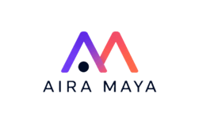
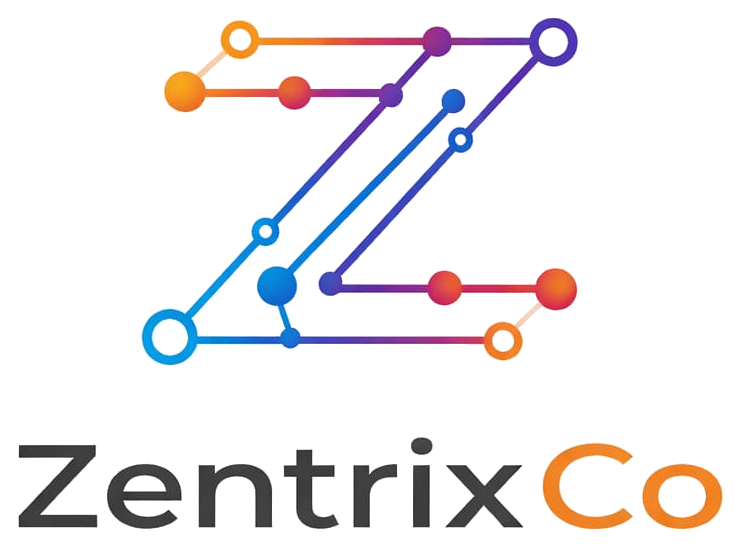

01
Entenderás la IA sin humo
Verás cómo usarla como apoyo real para crear, responder, analizar y mejorar tareas del día a día.


Una clase práctica para identificar oportunidades reales en tu negocio, ordenar procesos y entender cómo aplicar IA y automatización sin complicarte.
Muchas pymes crecen, pero siguen operando con procesos improvisados, tareas repetidas y decisiones tomadas “a pulso”. La IA y la automatización pueden ayudarte a recuperar tiempo, ordenar tu operación y enfocarte en lo que realmente mueve el negocio.
Verás cómo usarla como apoyo real para crear, responder, analizar y mejorar tareas del día a día.
Aprenderás a mirar tu negocio y reconocer qué tareas están consumiendo tiempo innecesario.
Te llevarás una visión más simple de cómo aplicar tecnología sin comprar herramientas al azar.
Qué es, cómo se usa y cómo puede ayudarte a mejorar productividad y comunicación.
Cómo identificar tareas manuales y transformarlas en flujos más simples y eficientes.
Qué evitar antes de invertir tiempo o dinero en herramientas que no solucionan el problema real.
Cómo empezar de forma simple, sin abrumarte ni convertir tu negocio en un laboratorio raro.
La tecnología no sirve de mucho si tu proceso sigue desordenado. Primero claridad, luego automatización.
Una clase para entender, decidir y comenzar mejor.Una mirada desde comunicación, IA y automatización para que salgas con ideas claras, prácticas y aplicables a tu negocio.
Ingresa a nuestros sitios web y conoce más sobre nuestro trabajo.
Periodista, estratega de comunicación e IA aplicada
Aira aterriza la IA al mundo de la comunicación, la cultura y la narrativa corporativa. En la clase mostrará cómo usarla con criterio para comunicar mejor, crear contenido útil y tomar decisiones más claras dentro de una pyme.
AI Automation Engineer | Agentes IA, RPA y procesos inteligentes
Migdelia diseña automatizaciones reales con RPA, n8n, APIs, low-code y flujos con IA. En la clase mostrará cómo pasar de tareas manuales a procesos conectados, eficientes y listos para crecer sin sumar más carga operativa.
Completa tus datos y te enviaremos la información correspondiente para asistir. Esta clase es ideal si quieres entender cómo aplicar IA y automatización en tu pyme de forma simple, práctica y con sentido.